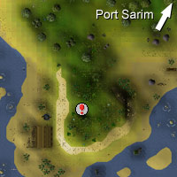
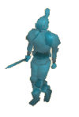
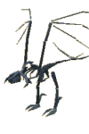

Asgarnian Ice Dungeon
Warning | Introduction | Location | Points of Interest
Personalities | Quests | The Lawless and Ruthless of the Ice Dungeon | Miscellaneous
Personalities | Quests | The Lawless and Ruthless of the Ice Dungeon | Miscellaneous
Warning
For those less-experienced adventurers looking to rush into the Ice Dungeon for blurite ore comes a small disclaimer: Aggressive beasts will attack on sight, and some of these are of a sufficiently high level to cause critical damage.
Stock food and Prayer up to optimum levels: an altar lies to the north of the dungeon entrance, while herrings and anchovies can be caught from nearby Fishing spots. Those players who are members can confront the skeletal wyvern for Slayer reasons, though this will require some form of elemental protection.
Introduction

Prolonged contemplation of the scene will be interrupted by a swift blow to the head, though. Looming ice giants and elemental warriors await those who wish to pilfer, while the shattering cries of the skeletal wyvern will send chills into wandering souls.
Location

The entrance to the dungeon is only a few paces eastward from Thurgo, the reclusive Imcando dwarf, and his shack on the peninsula.
Almost directly north lies Port Sarim jail.
Points of Interest

Aside from this, the cave has a large number of beasties that may be the target of Slayer assignments. One of these, the skeletal wyvern, is reachable only by Members.
Personalities
There are no personalities of note in the Asgarnian Ice Dungeon.
Quests
There are no quests to start in the Asgarnian Ice Dungeon.
The Lawless and Ruthless of the Ice Dungeon
![[image]](../../img/main/kbase/npc/area_guides/mugger.gif) Too unskilled to be a pickpocket, this unsubtle character has chosen the more physical route to gleaning your belongings. Too poor to afford any strong weapons, armour or even combat training, the mugger is more likely to be left penniless and bleeding than his target. |
![[image]](../../img/main/kbase/npc/area_guides/pirate.gif) Arr, so here be pirates! Avast ye, landlubber, as we be stronger than yer common pirate. Not by much, my lad, but enough to get yer brew stewing. We just be here storin' our cargo, ye see. So there be nothin' fer ye to see here, Jim lad, just shimmy along to whatever ye be doin'. Arr, I say. Arr!
|
|
| The mugger is hiding from the law in the opening caves of the Ice Dungeon. | Pirates are up to no good in the second cave you encounter in the Ice Dungeon. |
![[image]](../../img/main/kbase/npc/area_guides/hobgoblin1.gif) A tougher hybrid of the goblin, these common spear-wielding creatures are as comfortable above ground as below it. Strikingly ugly, this particular group of dungeon-dwelling hobgoblins are ramshackedly led by a stronger hobgoblin, who should be no real challenge to the experienced adventurer.
|

A spirit of elemental magic, the ice warrior feels compelled to patrol the ice cavern and defend the blurite. This melee fighter is composed of ice and as such is vulnerable to fire and shattering crush attacks. Also weak to Magic attacks, the warrior will often leave runestone drops as his elemental spirit evaporates.
|
|
| Hobgoblins swarm around the entrance to the Ice Dungeon, too scared to stray in. | The Ice warrior is drawn to the blurite in the ice cavern. |
![[image]](../../img/main/kbase/npc/area_guides/ice_giant.gif) Though his blades may be sharp, his mind certainly is not. The Ice Giant, tall and thunderous with icicles for a beard, is quite easy to bypass on a quest for blurite. Once confronted, however, this surly and none-too-clever oaf will make short work of you with his sword, slashing and blindly pummeling. This lofty foe is prone to fire, Ranged and Magic attacks.
|

Drawn to its unnatural chill, the skeletal wyverns have settled within the Asgarnian Ice Dungeon in an effort to escape human interference. Once the servants of the dragons, these serpent recluses will fight hard to protect the cave in which they have chosen to dwell, attacking with gouging kicks and, more frequently, devastating blue ice-breath. Its wyvern-breath cannot be defended by anti-dragonbreath shields, instead requiring elemental protection or a dragonfire shield. High-level Slayer and combat skills are a must.
|
|
| The Ice Giant's favoured stomping ground is the ice cave. | The skeletal wyverns prowl beyond the ice cave tunnel. |
Miscellaneous
- An altar lies to the north of the dungeon entrance for urgent replenishment of Prayer points, and a Fishing spot or two lies to the west with smaller fish and shrimps available.
- The skeletal wyverns are a good source of high-quality drops, including draconic visages and granite platelegs.

More articles in
Dungeons
|
|